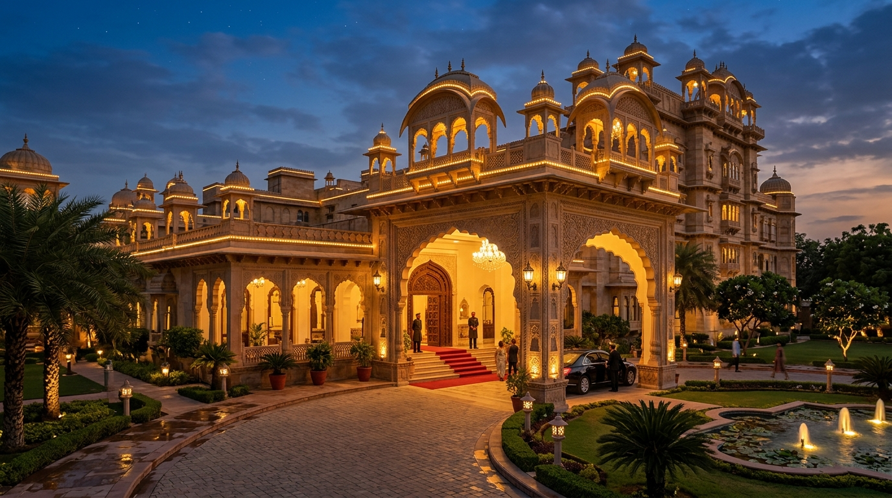

Top Places to Visit

Sri Sankaranarayanar Temple
5 Mins Walk (~300m)Historic 11th-century temple where Lord Shiva (Sankaran) and Lord Vishnu (Narayanan) unite in one divine sanctum. Renowned for Gomathi Amman shrine and healing ant-hill soil (Putrumann).
- Darshan Timings: 5:30 AM - 12:30 PM & 4:00 PM - 9:30 PM
- Famous Festival: Aadi Thapasu Festival (Grand Car Festival)
- Highlights: Sacred Snake Mound Soil, Golden Car & Ancient Dravidian Architecture

Traditional Handloom Silk & Cotton Market
2 Mins WalkSankaranKovil is famous for its vibrant handloom weaving industry. Shop directly from weavers for pure cotton sarees, dhotis, and silk dresses at wholesale prices.
- Pure Handloom Cotton & Silk Sarees
- Traditional Dhotis & Wedding Collections
- Temple Souvenirs and Brass Crafts

Courtallam Herbal Waterfalls (Spa of the South)
45 Mins Drive (~42 km)Cascading mountain waterfalls enriched with natural herbal qualities in the Western Ghats. Visit Main Falls, Five Falls, and Old Courtallam for a refreshing family bath.
- Main Falls, Five Falls, Tiger Falls & Old Courtallam
- Mineral-Rich Medicinal Mountain Water
- Peak Season: June to September

Kalugumalai Rock-Cut Temples (Vettuvan Koil)
25 Mins Drive (~22 km)Known as the 'Ellora of the South', featuring monolithic 8th-century Pandya rock carvings, Jain relief sculptures, and the magnificent Kazhugasalamoorthy Murugan Temple.
- Vettuvan Koil Monolithic Granite Temple
- Ancient Jain Rock Relief Sculptures
- Hilltop Cave Shrines and Panoramic Views